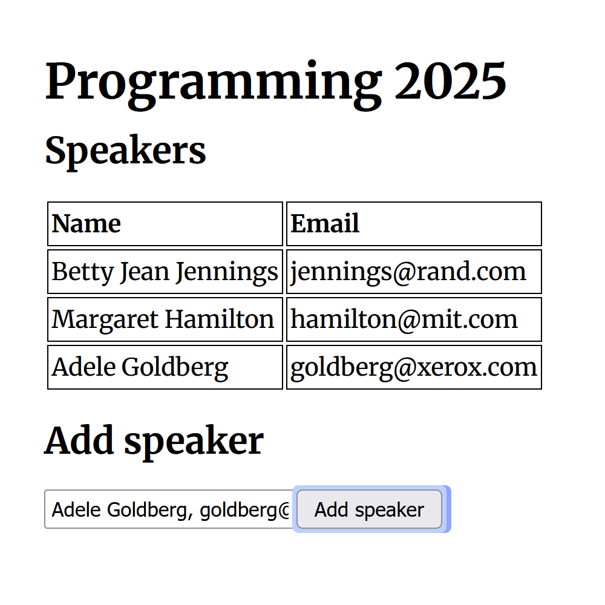
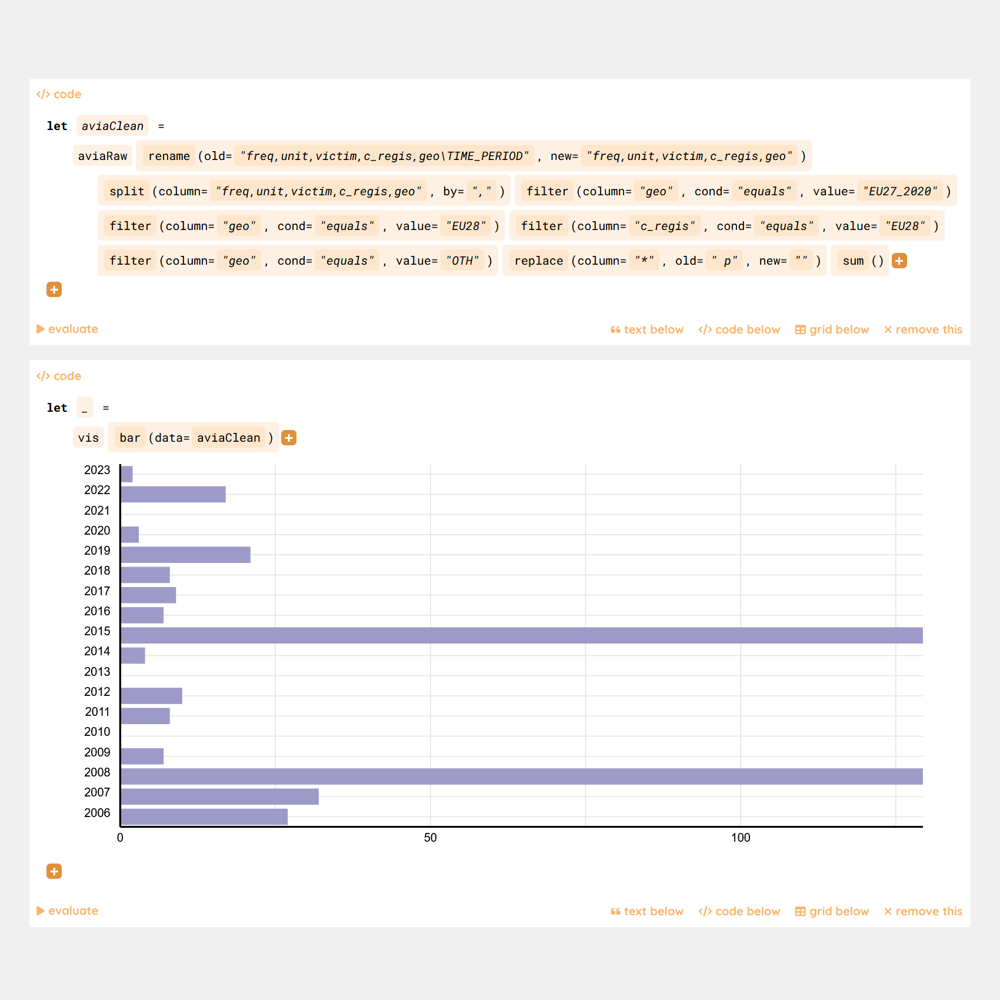
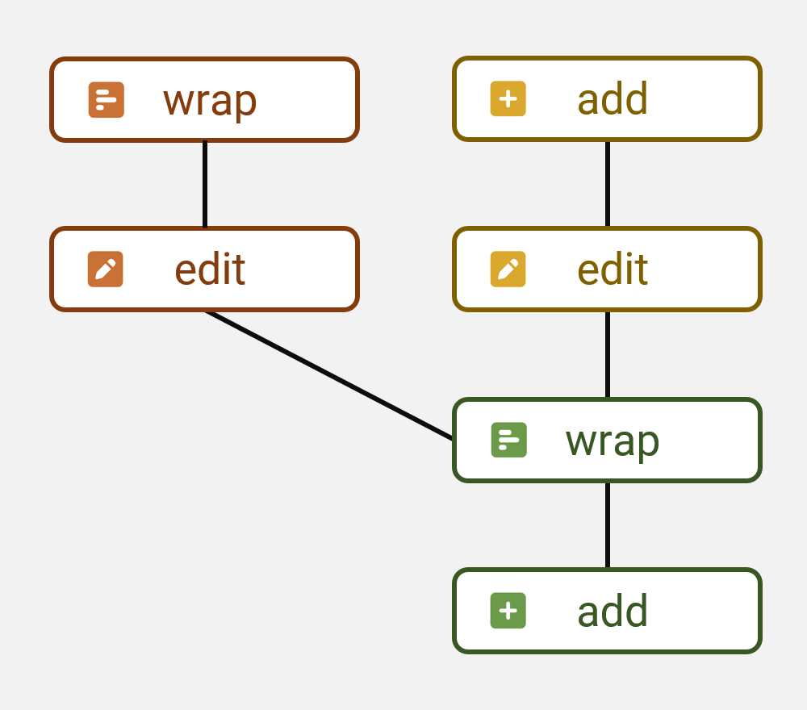
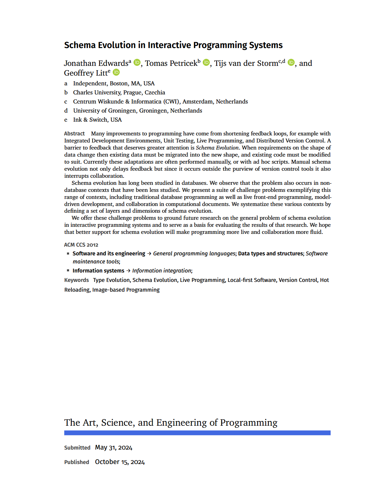

Denicek: Computational substrate for document-oriented end-user programming
Tomas Petricek, Charles University, Prague
Joint work with Jonathan Edwards

Programming experiences
Hard to implement for current languages!
- Local-first collaborative editing
- Programming by demonstration
- Incremental recomputation
- Schema change control
- End-user debugging
- Concrete programming
What to talk about

Programming substrates
- Systems based on edits
- Static and dynamic structure
- Merging techniques & complexity
Research methodologies
- What matters about a substrate?
- Proofs and evaluation?
- Establishing a research field?
Demo
5 minute sales pitch
Unreasonable effectiveness of merge
-
Collaborative editing
Merge edits with fewer conflicts -
Programming by demonstration
Replay edits done at an earlier point in history -
Incremental recomputation
Invalidate conflicting evaluated edits
Research methodology
Design
Co-design with prototype
6 formative examples

Evaluation
Notebook case study
Heuristic evaluation

(Not) Formative example
The obligatory demo?
Formative example
Building a counter app

‹Programming› 25
The Art, Science,
and Engineering
of Programming
18 paper talks
6 co-located workshops
Effekt tutorial
Formative example
Organizing a conference
Merging edits
Merge edit histories \(E, E_1\) and \(E, E_2\) with a shared prefix:
- \(\mathcal{M}_E(E_1,E_2) = E_1, E_2'\)
- \(\mathcal{M}_E(E_2,E_1) = E_2, E_1'\)
Reconciliation of independent edits \(e_1\) and \(e_2\) produces:
- \(e_2', e_2'', \ldots\) that have the effect of \(e_2\)
- added after \(e_1\), modified to respect the effects of \(e_1\)
Merging edits
Apply to newly added
- \(e_1\) is adding new nodes to the doc
- \(e_2\) targets nodes in affected location
- Generate \(e_1'\) targeting the new node
- Resulting edits are: \(e_1, e_2, e_1'\)
Transform matching references
- \(e_1\) changes structure of some node
- \(e_2\) target is inside the transformed one
- Modify \(e_2\) to respect the new structure

Schema change
Program layers
- Schema
- Code
- Data
Convergence vs. divergence
Can users pick only some later edits?
Design considerations
-
Static vs. dynamic typing
Explicitly distinguish type and value edits! -
Dealing with lists and indices
Append & edit item scenario is hard to support! -
Non-conditionality of edits
Effect should not depend on existing document state -
Expressivity of selectors
Support conditions (all checked) or rich (by tag)? -
Merging capabilities
Move \(e_1\) after \(e_2\), or also before \(e_2\)?
Evaluation
Datnicek notebook system
Evaluation
How to study programming substrates?
-
Datnicek notebook case study
Build by us, but after finishing Denicek design -
Olsen (2007) - Evaluating UI systems
Importance, generality, flexibility, expressive match -
Jakubovic et al. (2024) - Technical dimensions
Modes of interaction, feedback loops, notations -
No user studies!
Usability of strange research prototypes...?
Denicek computational substrate
-
Join the substrates revolution...
Come to the Substrates workshop on June 3! -
This need some clever people...
Looking for PhD students and post-docs!
Tomas Petricek, Charles University, Prague